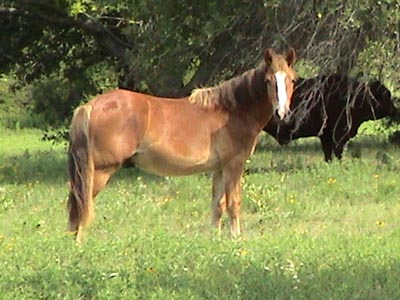
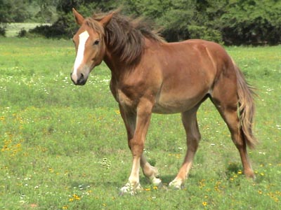
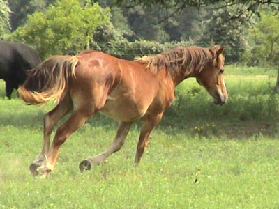
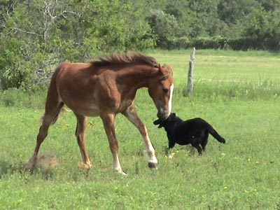

6/29/03
Thistle at the Parents'

Just growing up out in the pasture.

His mane and tail are long and soft, not coarse like the other draft crosses.

Sometimes he looks so much like a Welsh.

Other times you can see just how much bone he has.